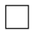
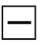

Reading Patterns
So having a head start into reading patterns for crochet is easy. Reading for knitting is a little more challenging. But here are the most common used pattern keys I have found for crochet and knitting.
| Read | Abriviation | Read | Abriviation |
|---|---|---|---|
single crochet |
sc | back of loop only | BLO |
| bobble stitch (6 loops on hook) | BO | finish off | FO |
| increase | inc | Magic Ring | MR |
| invisble decrease | dec | stitch count for the round | [] |
| front loop only | FLO | repeat the steps in the bracket for n times | ()x n |
With crochet patterns, most patterns are written like a book. Where you read the pattern like a book and follow directions to create other products other people have made. We follow these patterns to be able to create something we want. Kind of like following a written recipe.
| Read | Abriviation | Read | Abriviation |
|---|---|---|---|
knit on front side OR perl on back side |
 | perl on front side OR knit on back side |  |
| yarn over | knit 2 stitches together | ||
| skip a knit stitch | repeat |
With knitting patterns, most patterns are written like a blueprint. Where you follow the repeating patterns of the stitches to create patterns or products like socks and sweater designs. People follow these drawn out intructions like a lego instruction packet.